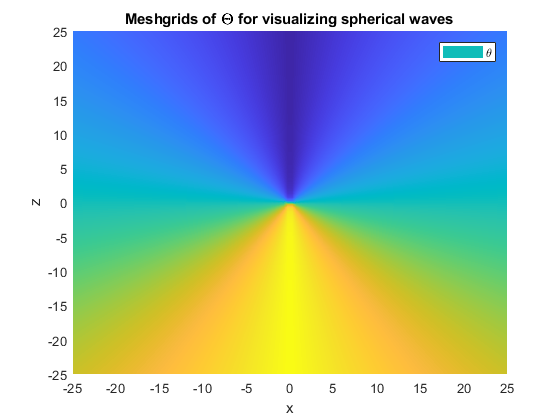

Contents
close all
clear
clc
Plane Waves
x = linspace(-3, 3, 100);
y = linspace(-3, 3, 100);
t = linspace(0, 20, 1001);
[X, Y] = meshgrid(x, y);
phi = pi/6;
f_xy = exp((-1j).*(cos(phi).* X + sin(phi).*Y));
f_xyt =0;
for t_ = t
figure(1)
f_xyt = real((f_xy).*exp(1j*t_)) + f_xyt;
drawnow limitrate nocallbacks
pcolor(X, Y, f_xyt)
shading interp
xlabel('x')
ylabel('y')
end
title('Planewave at a Fixed Point in Time')
Spherical Waves
kr = linspace(0.001, 60, 1000);
Hkr = real(exp(-1j.*kr)./kr);
d = 1./kr;
figure(2)
plot(kr, Hkr)
hold on
plot(kr, d, '--k')
xlabel('kr')
ylabel('h^{(2)}(kr)')
ylim([-0.5, 0.5])
legend('h^{(2)}_{1}(kr)','(kr)^{-1}')
title('Radial Dependance of Spherical Wave')
hold off
x = linspace(-25, 25, 100);
z = linspace(-25, 25, 100);
[X, Z] = meshgrid(x, z);
r = sqrt(X.^2 + Z.^2);
th = atan2(abs(X), Z);
figure(3)
pcolor(X, Z, r)
legend('r')
xlabel('x')
ylabel('z')
shading interp
title('Meshgrids of r for visualizing spherical waves')
figure(4)
pcolor(X, Z, th)
legend('\theta')
xlabel('x')
ylabel('z')
shading interp
title('Meshgrids of \Theta for visualizing spherical waves')

x = linspace(-25, 25, 100);
z = linspace(-25, 25, 100);
t = linspace(0, 15, 100);
ti = t;
[X, Z] = meshgrid(x, z);
a = 5;
r = sqrt(X.^2 + Z.^2);
th = atan2(abs(X), Z);
gd = sin(th);
gh = sin(a.*th)./(a.*th);
Hr = exp(-1j.*r)./r;
f_rtp = gd.*Hr;
f_rtp_h = gh.*Hr;
for t_ = t
Ft = f_rtp.*exp(1j*t_);
figure(5)
pcolor(X, Z, real(Ft))
drawnow limitrate nocallbacks
shading interp
caxis([-0.15, 0.15])
xlabel('x')
ylabel('z')
end
title('Radiation of Dipole')
for ti_ = ti
Fti = f_rtp_h.*exp(1j*ti_);
figure(6)
pcolor(X, Z, real(Fti))
drawnow limitrate nocallbacks
shading interp
caxis([-0.15, 0.15])
xlabel('x')
ylabel('z')
end
title('Radiation of Horn')